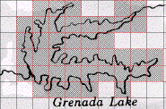
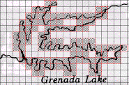
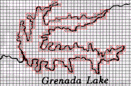
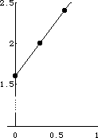

We use a map pf Grenada Lake to illustrate manual box-counting. We estimate the dimension of the boundary of the lake. Click each picture for an enlargement in a new window.
Secure the map and the grid with tape.
Count the grid boxes that contain any part of the outline of the lake.
Repeat for grids of size
|  |  |  |
Box-Counting for Grenada Lake with a grid scales of 1, 1/2 , and 1/4.
| scale r | count N(r) | log(1/r) | Log(N(r)) |
| 1 | 42 | 0.0 | 1.6 |
| 1/2 | 110 | 0.3 | 2.0 |
| 1/4 | 264 | 0.6 | 2.4 |
Results of box-counting for Grenada Lake, with grid scales of 1,
Note the grid sizes are all relative to the largest grid box, set to 1. Starting with a different size for a scale of one will produce box counts different from these, but the dimension will be the same. To see why this is true, consider this question: how does multiplying r by a constant alter the graph of the points?
Now plot the points
|  |
The same value should result from linear regression with a calculator or spreadsheet.
Return to Samples.